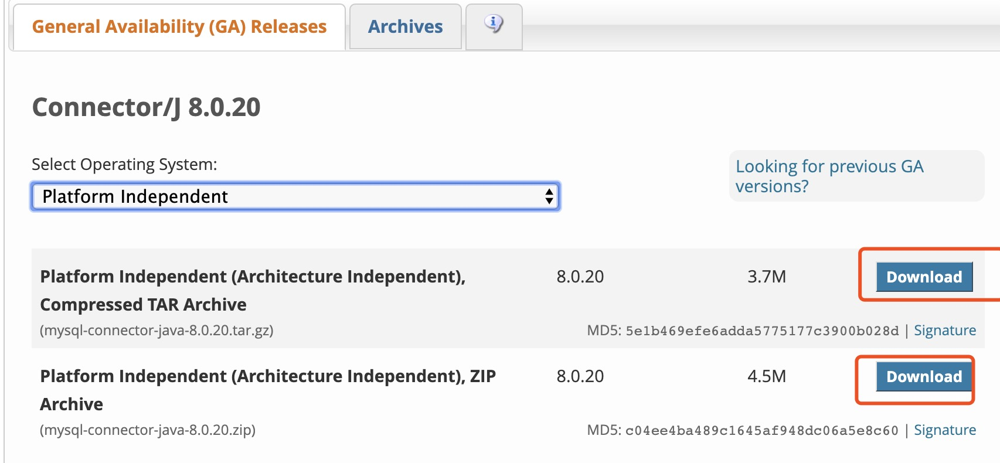
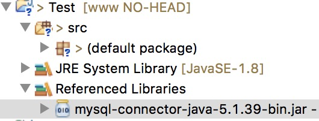
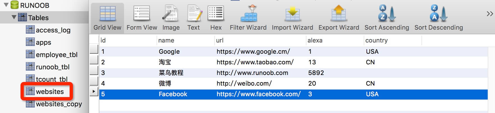

Conexión Java MySQL
En este capítulo presentamos cómo usar Java con JDBC para conectarse a la base de datos MySQL.
Java necesita un paquete de controladores para conectarse a MySQL. La dirección de descarga de la última versión es:http://dev.mysql.com/downloads/connector/j/Después de descomprimirlo, se obtiene el archivo de biblioteca jar, y luego importe ese archivo de biblioteca en el proyecto correspondiente.

Puede descargar el paquete jar proporcionado por este sitio:mysql-connector-java-5.1.39-bin.jar
Este ejemplo utiliza Eclipse; para importar el paquete jar:

La conexión a la base de datos para versiones superiores a MySQL 8.0 es diferente:
1. Versión del paquete de controladores para MySQL 8.0 y superiormysql-connector-java-8.0.16.jar。
2、com.mysql.jdbc.Drivercambiar acom.mysql.cj.jdbc.Driver。
Las versiones superiores a MySQL 8.0 no necesitan establecer una conexión SSL; es necesario desactivarla explícitamente.
allowPublicKeyRetrieval=true permite que el cliente obtenga la clave pública del servidor.
Finalmente, también es necesario configurar CST.
La forma de cargar el controlador y conectar a la base de datos es la siguiente:
Class.forName("com.mysql.cj.jdbc.Driver"); conn = DriverManager.getConnection("jdbc:mysql://localhost:3306/test_demo?useSSL=false&allowPublicKeyRetrieval=true&serverTimezone=UTC","root","password");
Crear datos de prueba
A continuación, creamos la base de datos RUNOOB en MySQL y creamos la tabla de datos websites. La estructura de la tabla es la siguiente:
Insertar algunos datos:
La tabla de datos se muestra a continuación:

Conectar a la base de datos
El siguiente ejemplo utiliza JDBC para conectarse a la base de datos MySQL. Tenga en cuenta que algunos datos, como el nombre de usuario y la contraseña, deben configurarse según su entorno de desarrollo:
Código del archivo MySQLDemo.java:
El resultado de ejecutar el ejemplo anterior es el siguiente:
Otras extensiones
Jajajaja... eh~
248***8117@qq.com
Dirección de referencia
Patrón DAO
DAO (DataAccessobjects, objetos de acceso a datos) se refiere a la implementación del acceso a datos persistentes entre la lógica de negocio y los datos persistentes. En términos simples, consiste en encapsular todas las operaciones de la base de datos.
Proporcionar las interfaces correspondientes al exterior.
En el proceso de diseño orientado a objetos, hay algunas "rutinas" utilizadas para resolver problemas específicos que se denominan patrones.El patrón DAO proporciona las interfaces de operación necesarias para acceder a sistemas de bases de datos relacionales, separa el acceso a datos de la lógica de negocio y ofrece una interfaz de acceso a datos orientada a objetos a la capa superior.
Como se puede ver en el uso del patrón DAO anterior, su ventaja radica en que logra dos aislamientos.
Un patrón DAO típico se compone principalmente de las siguientes partes.
Interfaz DAO:
public interface PetDao { /** * 查询所有宠物 */ List<Pet> findAllPets() throws Exception; }Clase de implementación DAO:
public class PetDaoImpl extends BaseDao implements PetDao { /** * 查询所有宠物 */ public List<Pet> findAllPets() throws Exception { Connection conn=BaseDao.getConnection(); String sql="select * from pet"; PreparedStatement stmt= conn.prepareStatement(sql); ResultSet rs= stmt.executeQuery(); List<Pet> petList=new ArrayList<Pet>(); while(rs.next()) { Pet pet=new Pet( rs.getInt("id"), rs.getInt("owner_id"), rs.getInt("store_id"), rs.getString("name"), rs.getString("type_name"), rs.getInt("health"), rs.getInt("love"), rs.getDate("birthday") ); petList.add(pet); } BaseDao.closeAll(conn, stmt, rs); return petList; } }Clase de entidad Mascota (los métodos get/set no se enumeran).
public class Pet { private Integer id; private Integer ownerId; //主人ID private Integer storeId; //商店ID private String name; //姓名 private String typeName; //类型 private int health; //健康值 private int love; //爱心值 private Date birthday; //生日 }Conectar a la base de datos
public class BaseDao { private static String driver="com.mysql.jdbc.Driver"; private static String url="jdbc:mysql://127.0.0.1:3306/epet"; private static String user="root"; private static String password="root"; static { try { Class.forName(driver); } catch (ClassNotFoundException e) { e.printStackTrace(); } } public static Connection getConnection() throws SQLException { return DriverManager.getConnection(url, user, password); } public static void closeAll(Connection conn,Statement stmt,ResultSet rs) throws SQLException { if(rs!=null) { rs.close(); } if(stmt!=null) { stmt.close(); } if(conn!=null) { conn.close(); } } public int executeSQL(String preparedSql, Object[] param) throws ClassNotFoundException { Connection conn = null; PreparedStatement pstmt = null; /* 处理SQL,执行SQL */ try { conn = getConnection(); // 得到数据库连接 pstmt = conn.prepareStatement(preparedSql); // 得到PreparedStatement对象 if (param != null) { for (int i = 0; i < param.length; i++) { pstmt.setObject(i + 1, param[i]); // 为预编译sql设置参数 } } ResultSet num = pstmt.executeQuery(); // 执行SQL语句 } catch (SQLException e) { e.printStackTrace(); // 处理SQLException异常 } finally { try { BaseDao.closeAll(conn, pstmt, null); } catch (SQLException e) { e.printStackTrace(); } } return 0; } }Jajajaja... eh~
248***8117@qq.com
Dirección de referencia
TiAmo
576***486@qq.com
Versiones superiores a MySQL 8.0:
Versión del paquete de controladoresmysql-connector-java-8.0.12.jar。
La URL de la base de datos debe declarar si se utiliza la verificación de seguridad SSL y especificar la zona horaria del servidor:
El controlador original es:
Class.forName("com.mysql.jdbc.Driver");En IDEA, la sugerencia es: Loading class `com.mysql.jdbc.Driver'. This is deprecated. The new driver class is `com.mysql.cj.jdbc.Driver'. The driver is automatically registered via the SPI and manual loading of the driver class is generally unnecessary
Significa que el controlador original está en desuso o ha quedado obsoleto, y se ha reemplazado automáticamente por el nuevo controlador com.mysql.cj.jdbc.Driver
Class.forName("com.mysql.cj.jdbc.Driver");TiAmo
576***486@qq.com
this
tli***1990@gmail.com
Dirección de referencia
Antes de JDBC 4.0, al conectar a la base de datos, normalmente se usaba
Class.forName("com.mysql.jdbc.Driver")Esta línea primero carga el controlador de la base de datos y luego realiza operaciones como obtener la conexión. Después de JDBC 4.0, no es necesarioClass.forNamecargar el controlador; basta con obtener la conexión directamente. Aquí se utiliza el mecanismo de extensión SPI de Java para lograrlo.this
tli***1990@gmail.com
Dirección de referencia
Nomoku
222***4847@qq.com
Dirección de referencia
Al ejecutar el programa se lanza una excepción:
Solución:
在
Añadir al final:
Pero si su jdbcUrl es similar a lo siguiente:
Es decir, cuando hay varios parámetros, deben separarse con &, pero & debe cambiarse a & como sigue:
Nomoku
222***4847@qq.com
Dirección de referencia
baicai
420***699@qq.com
Usar Maven para descargar automáticamente mysql-connector-java.
En el pom.xml del proyecto Maven, agregue la dependencia de mysql-connector-java. Solo necesita indicar el número de versión deseado para descargar automáticamente el paquete jar correspondiente, lo cual es más conveniente.
<dependency> <groupId>mysql</groupId> <artifactId>mysql-connector-java</artifactId> <version>8.0.16</version> </dependency>baicai
420***699@qq.com